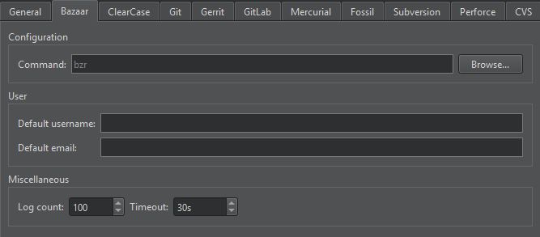

Bazaar and Breezy
Bazaar is a free version control system sponsored by Canonical. Breezy is a fork of Bazaar that is backwards compatible with Bazaar's disk format and protocols. However, Breezy runs on Python 3, rather than on Python 2.
Note: Enable the Bazaar plugin to use Bazaar or Breezy.
In addition to the standard version control system functions described in Use common VCS Functions, you can select Tools > Bazaar > Pull to turn a branch into a mirror of another branch. To update the mirror of the branch, select Push.
Uncommitting Revisions
In Bazaar and Breezy, committing changes to a branch creates a new revision that holds a snapshot of the state of the working tree. To remove the last committed revision, select Tools > Bazaar > Uncommit.
In the Uncommit dialog, select options to keep tags that point to removed revisions and to only remove the commits from the local branch when in a checkout.
To remove all commits up to an entry in the revision log, specify the revision in the Revision field.
To test the outcome of the Uncommit command without actually removing anything, select Dry Run.
Uncommit leaves the working tree ready for a new commit. The only change it might make is restoring pending merges that were present before the commit.
Bazaar and Breezy Preferences
To set Bazaar or Breezy preferences, select Preferences > Version Control > Bazaar:

- Command specifies the path to the command-line client executable.
- Default username and Default email specify the username and email address to use by default when committing changes.
- Log count sets the maximum number of lines the log can have.
- Timeout sets a timeout for version control operations.
See also Enable and disable plugins, Set up version control systems, Use common VCS functions, and Version Control Systems.